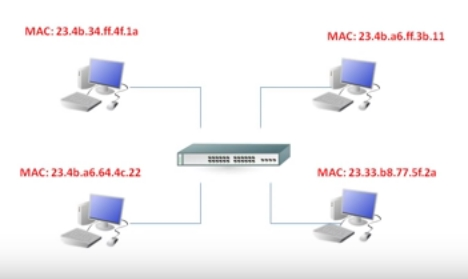

Uma rede é um conjunto de dispositivos ligados que podem trocar informações entre si (não apenas computadores, mas também impressoras, servidores, câmeras de vigilância, smartphones e etc.), além de compartilhar recursos e aplicativos.
Um exemplo é um compartilhamento de impressora, que pode ser acessada diretamente pelos computadores, ou pode ter um computador na rede que vai ser o servidor de impressão. Isso vale pra outras coisas como banco de dados e aplicativos.
Essas são as partes que compões uma rede:
PS: Nesses servidores ficam também programas como o Apache Web Server e o Microsoft Exchange.
Quando usamos o conceito de LAN e WAN, não exatamente falamos do tamanho da rede.
Quando falamos de LAN, estamos falando de uma rede de área local, mas não necessariamente uma rede pequena, mas sim uma rede interna (como por exemplo, os computadores de estão numa mesma rede, o roteador e o modem).
Já a WAN, é uma rede interligada de lugares distantes (por exemplo, uma rede LAN em São Paulo ligada numa rede em Recife), o que permite controlar computadores mesmo por essa distância (como um acesso remoto). A WAN também incluí o acesso a internet à qualquer site (como o seu computador e o servidor do Google, por exemplo).
Topologia basicamente é a forma de como os dispositivos ficam dispostos na rede, como se fosse o "desenho" da rede:
As topologias mais comuns são:
O modelo OSI descreve as regras que padronizam os diversos componentes em uma rede para que os dispositivos consigam se comunicar. O modelo OSI é dividido em sete camadas:
PS: As camadas são contadas de baixo pra cima nesse caso, a primeira é a Física, a segunda é a Enlace e assim por diante.
TCP/IP é um conjunto de protocolos de comunicação e começou a ser desenvolvido pelo departamento de defesa americano de onde vem o termo DoD.
O TCP/IP é dividido em quatro camadas:
| TCP/IP | Referente ao Modelo OSI |
|---|---|
| Aplicação | Aplicação |
| Apresentação | |
| Sessão | |
| Transporte | Transporte |
| Rede (Internet) | Rede |
| Física | Enlace |
| Física |
Veja alguns exemplos dos protocolos em pilhas de TCP/IP:
| Camadas | Protocolos |
|---|---|
| Aplicação | HTTP, SMTP, IMAP, FTP, SIP, SSH, Telnet |
| Transporte | TCP, UDP |
| Rede (Internet) | IPv4, IPv6 |
| Física | ARP, Ethernet, FDDI |
PS: A camada física no TCP/IP engloba as camadas 1 e 2 do OSI, mas elas tratam de coisas diferentes.
Enquanto o TCP (Transmission Control Protocol) organiza os pacotes, ele também utiliza o sistema de reconhecimento da informação para verificar se os dados estão íntegros. Outro protocolo presente nesta camada é o UDP (User Datagram Protocol) que é utilizado quando dados menos importantes são transmitidos, tipicamente em requisições DNS. Isto porque o UDP não possui as funcionalidades de reorganização das informações nem de verificação da integridade dos dados. No entanto, ele é bem mais rápido do que o TCP.
Para redefinir o TCP/IP do computador, use o comando netsh int ip reset all e reinicie o PC.
Para vermos os IPs abertos no computador, suas respectivas portas e o tipo de protocolo usado (TCP ou UDP), usamos o comando netstat /a /n /b (no Linux use como parâmetro -ane).
O endereço IP é o endereço lógico que cada dispositivo na rede deverá ter, por exemplo, computadores, roteadores, tables, smarthphones, etc.
Existe duas formas de colocar o endereço IP na máquina, uma é manualmente, onde entramos na configuração do dispositivo e colocamos o endereço IP, e a outra é através de um servidor DHCP (pode ser uma máquina ou servidor com Windows, Linux, roteador, etc.), que vai atribuir um IP à cada dispositivo que entrar na rede.
Um endereço de IP é formado por quatro números, cada um passando de 001 à 255, como por exemplo, 192.168.0.2.
Um IP necessita de uma máscara de subrede, como 255.255.255.0, no caso, a máscara, os números 255 indica que o número corresponde ao IP no mesmo ponto (com o exemplo acima seria 192.168.0 no primeiro) seria de endereço de rede, já os últimos números são referentes ao host (dispositivos). Por exemplo, um computador teria o IP 192.168.0.2, seria o computador 2 na rede 192.168.0, e o três seria 192.168.0.3, e assim por diante, se alterar um deles para, por exemplo, 192.168.1.2, ele já faria parte de outra rede. Todos usariam a mesma máscara 255.255.255.0.
Pra facilitar a criação de redes, foram estabelecidos alguns padrões, por exemplo, quando tivermos uma rede, ela terá uma classe padrão. Veja as classes logo abaixo:
255.0.0.0.10.0.0.2.255.255.0.0.172.16.0.13.255.255.255.0.192.168.0.3.PS: Note que faltou o 127, ele é usado para loopback, que explicaremos logo abaixo.
Temos também os vários tipos de endereços à serem usados pelo IP:
10.0.0.0 à 10.255.255.255, classe B de 172.16.0.0 à 172.31.255.255 e classe C de 192.168.0.0 à 192.168.255.255). Tipo um ramal de telefone.127.x.x.x (sua máscara é da classe A, 255.0.0.0).169.254.x.x (sua máscara é da classe B, 255.255.0.0).Podemos verificar nosso IP e ver a localização de qualquer IP por esse site: https://www.localizaip.com.br/
Em redes de computadores, uma porta é um software de aplicação específica ou processo específico servindo de ponto final de comunicações em um sistema operacional hospedeiro de um computador. Uma porta tem associação com o endereço de IP do hospedeiro, assim como o tipo de protocolo usado para comunicação. O propósito das portas é para singularmente identificar aplicações e processos de um único computador e assim possibilitá-los a compartilhar uma única conexão física com uma rede de comutação de pacotes, como a internet.
Imagine que as duas partes do endereço IP (a parte referente à rede e a parte referente ao host) correspondem ao CEP da rua e ao número do prédio. Um carteiro só precisa destas duas informações para entregar uma carta. Mas, dentro do prédio moram várias pessoas. O CEP e número do prédio só vão fazer a carta chegar até a portaria. Daí em diante é preciso saber o número do apartamento. É aqui que entram as famosas portas TCP.
Ao todo, é possível usar 65536 portas TCP e UDP, começando em 1. Tanto no protocolo TCP como no UDP, é comum o uso das portas de 1 a 1024, já que a aplicação destas é padronizada pela IANA (Internet Assigned Numbers Authority).
Essas são algumas das portas mais usadas:
| Protocolo | Porta Padrão | Serviço |
|---|---|---|
| HTTP | 80 8080 |
Navegação web (processamento de HTML) |
| HTTPS | 443 | Navegação web (processamento de HTML) com criptografia |
| SMTP | 25 587 |
Envio de e-mails |
| 465 | Envio de e-mails com criptografia | |
| IMAP | 143 | Recebimento de e-mails |
| 993 | Recebimento de e-mails com criptografia | |
| POP | 110 |
Recebimento de e-mails |
| 995 | Recebimento de e-mails com criptografia | |
| MSSQL | 1039 433 1040 |
Banco de dados SQL Server |
| MYSQL | 3306 | Banco de dados MySQL |
| PGSQL | 5432 | Banco de dados Postgre |
| FIREBIRD | 3050 | Banco de dados Firebird |
| DNS | 53 | Consulta de DNS |
| WHOIS | 43 | Consulta de whois |
| FTP | 21 | Comandos FTP |
| 20 | Transmissão de arquivos FTP | |
| SSH | 22 | Acesso SSH |
| SFTP | FTP com criptografia | |
| TELNET | 23 | Acesso remoto telnet |
| SVN | 3690 | Controle de versões subversion |
| DHCP | 67 | Envio de dados do cliente ao servidor |
| 68 | Recebimento de dados do servidor ao cliente | |
| SNMP | 161 162 |
Gerenciamento de redes |
| RIP | 520 521 |
Roteamento que não requer conexões |
| RDP | 3389 | Acesso Remoto do Windows |
| SKYPE | 81 | Protocolo Skype |
| VNC | 5900 | Acesso Remoto VNC |
Basicamente, essas são algumas funções mais detalhadas dos protocolos mais usados:
Algumas protocolos que utilizam o TCP são o HTTP/HTTPS, FTP, Whois, POP e VNC. Já o UDP é utilizado pelo DHCP (e seu antecessor BOOTP), TFTP, SNMP e RIP. Existem também os protocolos que usam tanto TCP quanto UDP, alguns deles são o SSH, Telnet, SMTP, DNS, IMAP e MySQL.
Podemos ver a lista de protocolos eaqui: https://pt.wikipedia.org/wiki/Lista_de_portas_dos_protocolos_TCP_e_UDP
Sempre que se tem um ou mais dispositivos na rede (por exemplo, computadores), temos várias formas de comunicação entre eles.
Um desses métodos é o método Unicast, que um computador se comunica com apenas um outro computador especificamente e estabelece a comunicação apenas com esse dispositivo específico na rede (por exemplo, numa troca de arquivos).
Outra forma de comunicação é a Broadcast, nesse caso a informação é enviada à todos os dispositivos ao mesmo tempo.
Temos também a Multicast, que a informação é enviada para um grupo específico de dispotivos selecionados. Os outros fora do grupo não recebem as informações.
A camada de Enlace (ou Data Link Layer) é a segunda camada do modelo OSI e, entre outras coisas, é responsável por traduzir as informações da camada de rede em bits para que então sejam enviadas pela camada física.
Essa camada é dividida em duas sub-camadas como podemos ver abaixo:
Nessa camada, as mensagens são formatadas em pedaços chamados frames ou quadros, que contém endereços de origem e destino.
A subcamada MAC (Media Access Control) diz como os dados serão colocados no meio físico e define qual o endereço físico do dispositivo. Outras coisas como notificação de erro, controle de fluxo e a ordem em que os quadros serão enviados podem ser descritos aqui.
A outra subcamada, a LLC (Logical Link Control), deve conhecer qual protocolo estará atuando na camada de rede. Quando o host recebe o quadro, o cabeçalho presente no LLC dirá para onde aquele quadro deverá ser destinado. Essa subcamada também pode fornecer controle de fluxo e sequência de bits de cotrole.
O MAC Address também é conhecido como "endereço físico" e está gravado em um chip na placa de rede.
O endereço MAC é um endereço de 48 bits sempre escrito em hexadecimal, como por exemplo 00-23-10-35-00-3B.
Ao invés de traços, às vezes é esrito com dois pontos entre os números, como 00:23:10:35:00:3B.
O endereço MAC é dividido em duas partes, sendo que a primeira identifica o fabricante (podendo até serem substituir pelo nome do mesmo) e a segunda identifica apenas aquela placa de rede.
As três partes de um quadro MAC, na verdade um frame:
| Cabeçalho | Dados | Trailer |
| MAC Origem | ||
| MAC Destino |
O cabeçalho tem as informações sobre o frame (entre eles, o MAC de origem e o MAC de destino. Os dados informa o que está sendo enviado, e o trailer tem informações de verificação (se ele foi alterado ou não durante o envio).
PS: Você pode ver o endereço MAC digitando ipconfig /all ou getmac /v /fo list no Prompt do Windows, procure por endereço físico. No Linux use ifconfig -a.
Anteriormente sobre a camada de enlace, diferente enrtre unicast, multicast e broadcast e MAC, aqui entenderemos como o Switch trabalha numa rede.
Veja um exemplo de rede, com o Switch no meio (não confundir com roteador ou modem) e os computadores, cada um com seu MAC:
Vamos supor que cada computador tenha nomes de A, B, C e D, e que o computador A queira conversar com o B e não sabe qual é o tal computador, ele manda pra rede um broadcast usando o protocolo ARP, que pergunta quem é o computador B, que irá responder.
No momento que o computador A entra em contato com o B, o Switch lerá o quadro que tem o endereço MAC de origem e o MAC de destino. Quando ele lê o MAC de origem, imediatamente ele grava o mesmo na memória (chamada CAM), que tem uma tabela que escreve o MAC de origem e associa com a porta no qual o tal computador está. O mesmo ocorre com o computador de destino e seu MAC, que o Switch perguntará para todos na rede qual é o tal MAC até que o B responda.
Vamos supor que o computador C mande um frame unicast para o B, já sabendo o MAC do B, nesse caso ele não precisa perguntar pros outros computadores qual é o B por já saber qual o MAC e a porta dele. Isso evita transmissão de mensagem pros computadores errados e por isso, é mais seguro.
O Domínio de Broadcast é até aonde o broadcast chega, vamos supor que a imagem acima tenha 100 computadores, se qualquer um deles mandar um broadcast pra rede, todos os computadores ligados na rede vão escutar o broadcast. O Domínio de Broadcast é até aonde chega o broadcast (por exemplo, um Switch de 96 portas manda de uma das máquinas para as outras 95 portas).
Quando um dispositivo quer contatar outro na rede, ele vai usar o protocolo ARP pra perguntar se este dispositivo está na rede. Mesmo se um dos computadores mandar uma mensagem unicast pra outro, o Switch manda um broadcast para descobrir o MAC de destino, caso ele ainda não saiba.